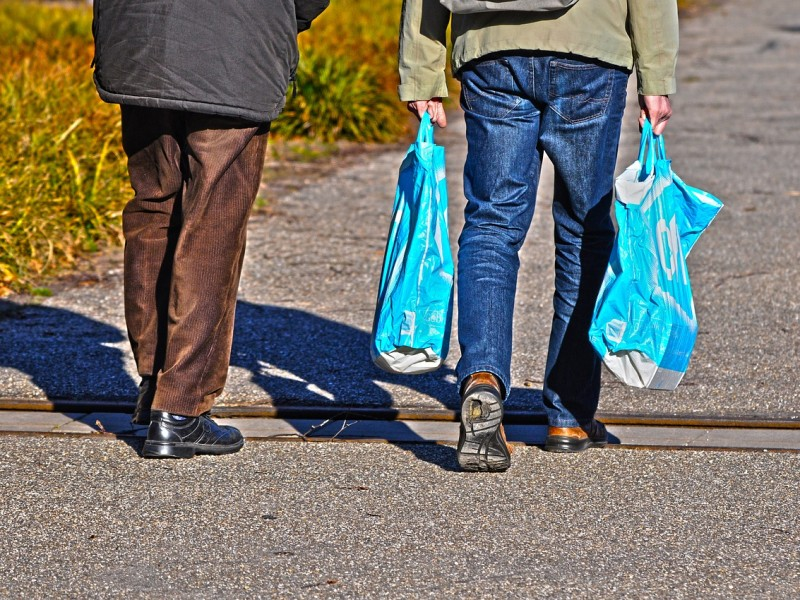

April 18, 2018
Take a Positive Step

Here’s a riddle: what’s one easy thing that you can do every day that will improve your health, save money, and help air quality? Hint: It starts with “w”. Yup: Walk more! Walking for any purpose is good for your physical and mental health, but when you substitute walking for a portion of your driving it quickly adds up to also help our shared environment.
The average American car trip is less than a mile, which means that it can be easily walked in 15-20 minutes. Substituting walking for these shorter trips brings extra punch because short trips are when the most pollution is emitted from an engine.
Think ahead about the short trips you make during the week. For many of us it’s a quick trip to the store or our kids’ school. It may be running out to grab a sandwich during a lunch break. Or perhaps it’s a shopping trip with multiple nearby stops. Any of these offer opportunities to give your car a rest (yes, even if it’s an electric car!) and take a positive step for the planet.
To learn more about the positive impacts of walking, and how to make your community more walkable, visit America Walks or the Pedestrian and Bicycle Information Center.